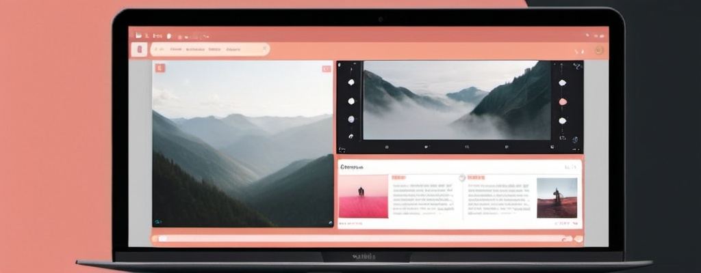
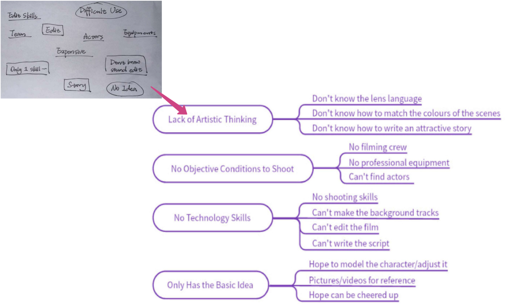
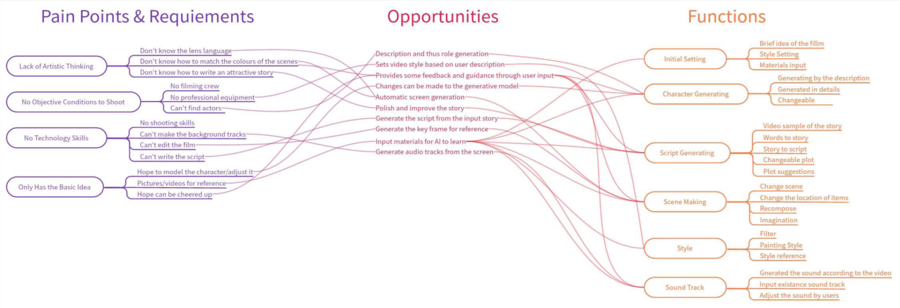
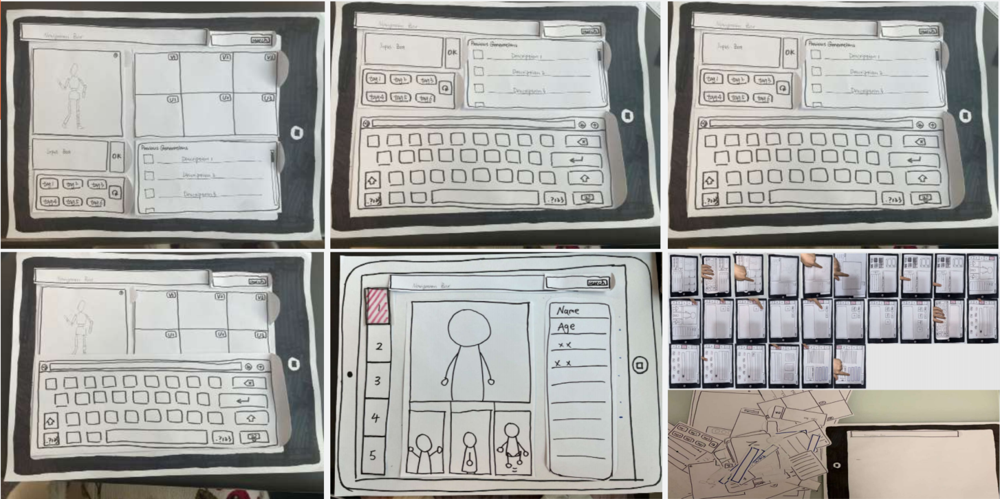
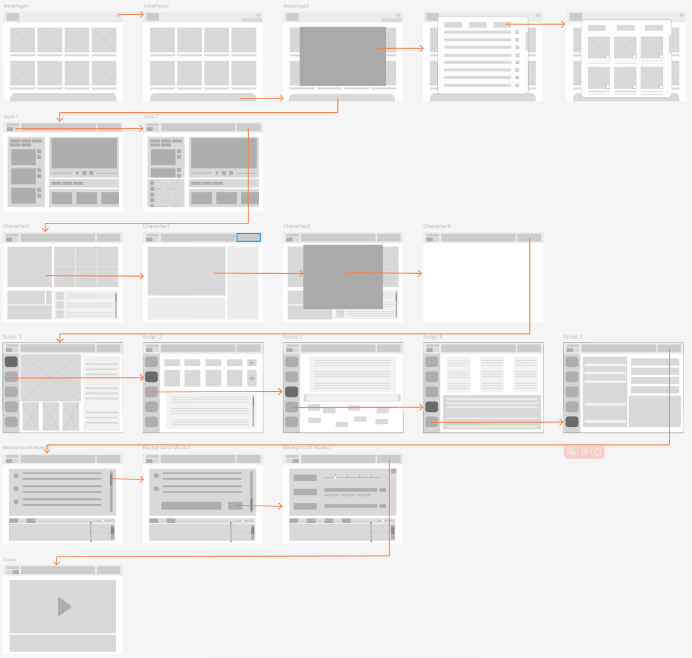
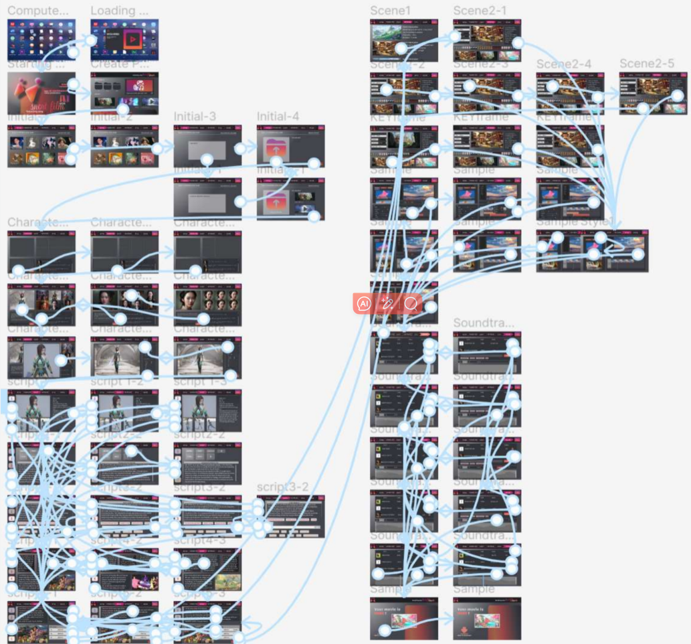
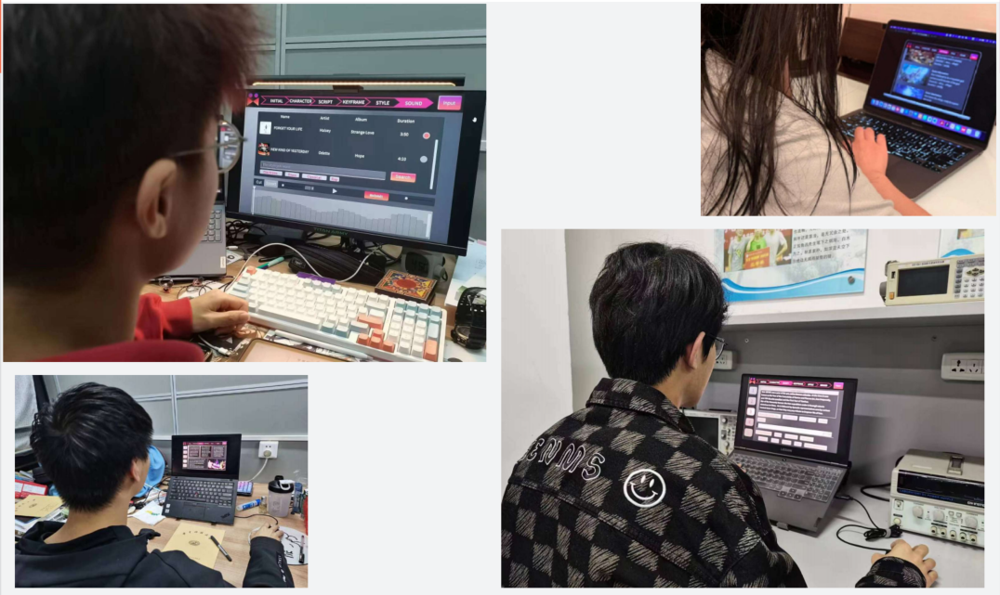
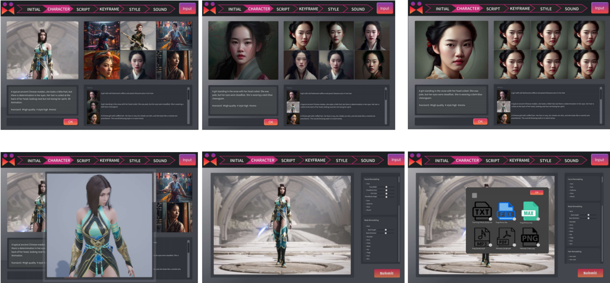

AI Movie Worker: AI-Powered Movie Creation Tool
AI Movie Worker is a desktop application designed to enable users to create their own short films without requiring advanced video-making expertise. Targeting beginners with a foundational understanding of film-making, particularly those in related fields, the app simplifies the video production process. It empowers users by providing intuitive tools that bridge the gap between basic knowledge and professional-level film-making, allowing them to produce high-quality films without the need for specialized technical skills.
Project timeline
Jan 2023 - May 2023
Project type
User Interface Design and Interaction Prototypes
Contributor
Jiahe Liu
Mingyao Pan
Yaxuan Mao
Ziyao Wang
(in alphabetical order)
My contribution
User research
Product design
Interface Design
User test
Iteration
Barriers to Film-making for Beginners
In today’s world, filmmaking has become increasingly accessible, yet the technical complexities involved in producing high-quality videos often discourage beginners from pursuing their creative aspirations. Many people, especially those with a basic understanding of film theory but lacking advanced technical skills, face significant barriers when trying to turn their ideas into polished video productions. The learning curve for mastering film-editing software or acquiring technical expertise can be overwhelming, leading many aspiring filmmakers to abandon their projects before they even begin.
"It's time to simplify film-making and empower beginners to focus on their creativity, rather than getting lost in technical complexities."
Get a Quick Look by Semi-Structured Interview
Interview Design

When designing user interview, we focused on the following:
- Clarify the purpose of the interview
- Flexibly adjust interview questions according to their needs on creating short movies
- Observe users' reactions and emotions
Overall, the design thinking and feedback aim to understand users' needs and experiences through in-depth interviews and observation.
Totally 8 user interviews, 4 males and 4 females aged from 20 to 31, 6 of them are students, and one is an art worker, another is a product manager.
Jean
"I really want to make a short film because I have a great story in my mind that I want to tell, but I'm just in my first year of university, and I'm not quite sure how to go about filming it."
Huang
"We are considering shooting a soft advertisement for a product, but the budget is quite limited. Therefore, we want to try doing it ourselves, but we're unsure about how to shoot it in a way that's more effective for product promotion."
Caleb
"I am in the film club, and we are currently making a short film. However, we don't have much knowledge of cinematography. It would be great if there were a tool that could offer us some guidance."
Anna
"I have always been interested in film-making, but since I'm not from this field, it’s quite challenging for me. It would be great if there were an easy and accessible way for enthusiasts like us to get started."
Personas


Storyboard

User Analyze Iteration


Converting Pain Point to Functions
Although the interview content was analyzed in detail, further exploration of the specific user pain points and needs was deemed necessary. A chart was created to categorize these insights more clearly, which played a crucial role in informing the subsequent design of the app's features.


While we initially had a broad concept of the software's purpose, it required refinement. Based on the users' pain points and needs, certain desired features (highlighted in red) were identified, which then informed the development of functional components with clear structure and logic (highlighted in orange).
The final version of the software is organized into six key sections: Initial Settings, Character Generation, Script Creation, Scene Design, Style, and Soundtrack.
Prototype
Paper Prototype

The current version represents the original design based on the functional analysis. As shown, this is the iPad version with only five steps: style, character, script, scene, and background music. The image above illustrates the overall content and the sections developed. During production, the interface becomes less visible when the keyboard pops up for text input. Additionally, a review of other iPad-based software, such as iMovie and Silhouette, reveals that they rarely include keyboard input within the interface. Therefore, it is suggested to transition the software to a desktop version for better usability.
WireFrame



Interface
The software prototype design encompasses the entire workflow, from launching the application to exporting the final video. This process includes initialization, character creation, script generation, scene design, style selection, and background soundtrack integration. At any stage, the user has the option to skip a step, allowing the AI to automatically generate content based on existing information or external input.

Usability Test: Try to Make a Film

I conducted a task-based usability test with five participants to evaluate the usability and user experience of AI Movie Worker. After introducing the product and assigning a task to create a short film, I recorded the testing process and collected feedback using the System Usability Scale (SUS) and interviews. The results showed that AI Movie Worker was highly usable and easy to learn.
During testing, I also noted any unusual reactions or difficulties, which were used for follow-up interviews with categorized feedback as follows:
- Improve interaction issues, such as the logic of character part.
- Provide more shortcuts for easier usage, such as the script part, user may skip some unnecessary processes.

Improved Design


Self Reflection
It is my first time fully appreciate the complexities involved in designing user interfaces and user experiences. l gained a deeper understanding of the importance of user-centered design, from conducting user research to creating wire-frames and prototypes.I also learned about various design principles, such as the importance of consistency, simplicity,and visual hierarchy. One of the most valuable aspects of this experience was the opportunity to work on real-world projects and receive feedback from my peers and instructors. The collaborative and iterative nature of the design process was emphasized, which helped me to develop a more flexible and adaptive mindset.
← Back